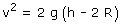
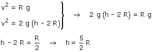

|
Para que pueda recorrer el rizo sin problemas, la bola tendrá que llegar al punto más alto con la velocidad crítica por lo menos Como recordará alguno que otro, la velocidad crítica (En un movimiento circular en plano vertical) es la velocidad que debe tener el móvil para poder describir la curva sometido solamente a su peso
Y la velocidad de la bola en el punto más alto vale:  Combinando las dos expresiones resulta un sistema con dos incógnitas: h, v  |